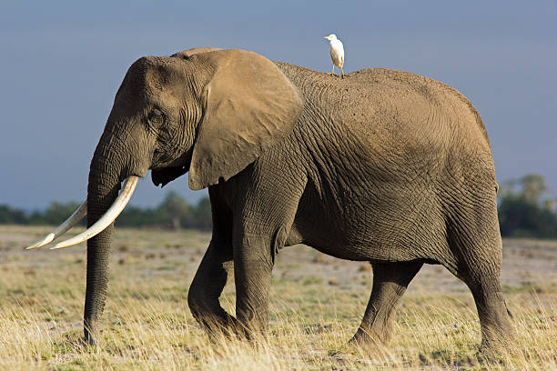

🗣️ How Elephants Talk to Each Other
🔊 Using Sounds We Can Hear
Elephants trumpet loudly when they are excited, scared, or calling out to others. Each sound means something different, kind of like human words!
🌍 Talking With Their Feet?!
Yes! Elephants can make very low sounds called infrasound—too low for humans to hear. These sounds travel through the ground, and other elephants can feel them with their feet from miles away!
🫂 Touch and Trunks
Elephants also use their trunks to show love and friendship. They wrap trunks around each other like hugs and even comfort sad elephants with gentle touches.
🤝 Talking to Other Animals
Elephants live in habitats with other animals like birds and antelope. Sometimes, birds help elephants by warning them of danger. This is called mutualism, where both animals help each other.
📽️ Want to See Elephants Talk?
Watch this cool video about how elephants use sound to communicate: